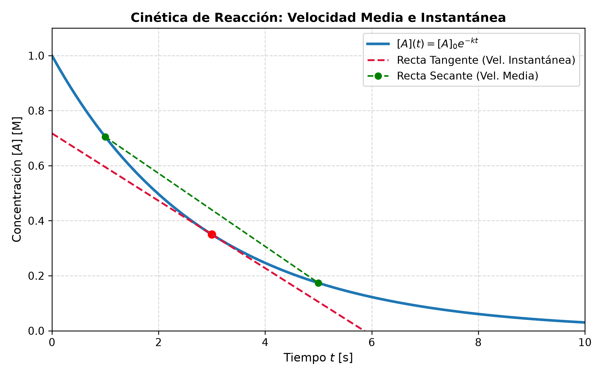
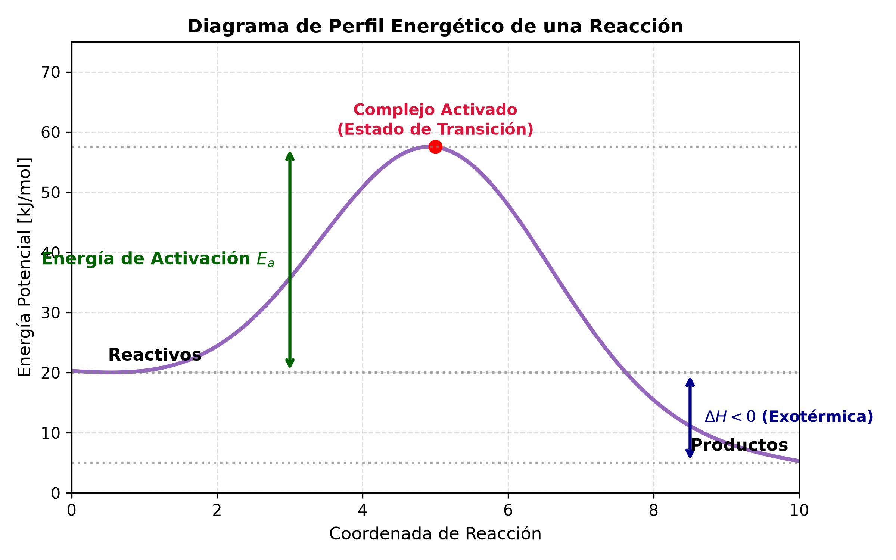

5.1 Cinética Química y Velocidad de Reacción
1. Marco Teórico y Definiciones Fundamentales
La Cinética Química es la parte de la química que estudia la velocidad a la que ocurren las reacciones químicas, los factores que la afectan y los mecanismos detallados a través de los cuales los reactivos se transforman en productos.
A. Concepto de Velocidad de Reacción
La velocidad de una reacción química expresa el cambio en la concentración de un reactivo o producto por unidad de tiempo.
Para una reacción general del tipo: $\(a\text{A} + b\text{B} \rightarrow c\text{C} + d\text{D}\)$
La velocidad media se define formalmente relacionando las variaciones de concentración (\(\Delta [\text{X}]\)) y el intervalo de tiempo (\(\Delta t\)):
- Los signos negativos en los reactivos \(\text{A}\) y \(\text{B}\) aseguran que la velocidad sea siempre una magnitud positiva, ya que su concentración disminuye con el tiempo (\(\Delta [\text{A}] < 0\)).
- La velocidad instantánea corresponde al límite cuando \(\Delta t \to 0\) (la derivada de la concentración respecto al tiempo):

2. Ley de Velocidad y Orden de Reacción
La ley de velocidad expresa la relación entre la velocidad de reacción y las concentraciones de los reactivos elevadas a ciertas potencias.
- \(k\): Constante de velocidad (depende de la temperatura).
- \(m, n\): Órdenes parciales de reacción respecto a cada reactivo. No coinciden necesariamente con los coeficientes estequiométricos \(a\) y \(b\); deben determinarse experimentalmente.
- \(m + n\): Orden global de reacción.
Clasificación de Órdenes de Reacción E Integración
| Orden | Ley Diferencial | Ley Integrada | Vida Media (\(t_{1/2}\)) | Unidades de \(k\) |
|---|---|---|---|---|
| 0 | \(v = k\) | \([\text{A}]_t = [\text{A}]_0 - k t\) | \(t_{1/2} = \frac{[\text{A}]_0}{2k}\) | \(\text{M} \cdot \text{s}^{-1}\) |
| 1 | \(v = k[\text{A}]\) | \(\ln[\text{A}]_t = \ln[\text{A}]_0 - k t\) | \(t_{1/2} = \frac{\ln(2)}{k} \approx \frac{0.693}{k}\) | \(\text{s}^{-1}\) |
| 2 | \(v = k[\text{A}]^2\) | \(\frac{1}{[\text{A}]_t} = \frac{1}{[\text{A}]_0} + k t\) | \(t_{1/2} = \frac{1}{k[\text{A}]_0}\) | \(\text{M}^{-1} \cdot \text{s}^{-1}\) |
3. Energía de Activación y Ecuación de Arrhenius
Para que ocurra una reacción, las moléculas reactivas deben chocar con una orientación adecuada y con una energía mínima suficiente denominada Energía de Activación (\(E_a\)).

Ecuación de Arrhenius
La dependencia de la constante de velocidad con la temperatura viene dada por:
Tomando logaritmo natural en ambos miembros:
Forma de dos puntos para calcular \(E_a\) a partir de dos temperaturas \(T_1\) y \(T_2\):
Donde \(R = 8.314 \frac{\text{J}}{\text{mol} \cdot \text{K}}\) y \(T\) en Kelvin (\(\text{K}\)).
4. Ejercicios Resueltos del TP de Cinética Química
Ejercicio 1: Determinación de la Ley de Velocidad por Método de Velocidades Iniciales
Enunciado: Para la reacción \(2\text{NO}(g) + \text{O}_2(g) \rightarrow 2\text{NO}_2(g)\), se obtuvieron los siguientes datos a \(25^\circ\text{C}\):
| Experimento | \([\text{NO}]_0 \text{ (M)}\) | \([\text{O}_2]_0 \text{ (M)}\) | Velocidad Inicial (\(\text{M/s}\)) |
|---|---|---|---|
| 1 | 0.012 | 0.024 | \(2.8 \times 10^{-5}\) |
| 2 | 0.024 | 0.024 | \(1.12 \times 10^{-4}\) |
| 3 | 0.012 | 0.048 | \(5.6 \times 10^{-5}\) |
Determinar:
a) El orden de reacción respecto a cada reactivo y el orden total.
b) La constante de velocidad \(k\).
Desarrollo Analítico:
-
Planteo general de la ley de velocidad: $\(v = k \cdot [\text{NO}]^m \cdot [\text{O}_2]^n\)$
-
Cálculo del orden \(m\) (respecto a \(\text{NO}\)):
Comparamos el Exp. 2 y el Exp. 1 (donde \([\text{O}_2]\) se mantiene constante): $\(\frac{v_2}{v_1} = \frac{k (0.024)^m (0.024)^n}{k (0.012)^m (0.024)^n} \implies \frac{1.12 \times 10^{-4}}{2.8 \times 10^{-5}} = \left(\frac{0.024}{0.012}\right)^m\)$ $\(4 = (2)^m \implies m = 2\)$ -
Cálculo del orden \(n\) (respecto a \(\text{O}_2\)):
Comparamos el Exp. 3 y el Exp. 1 (donde \([\text{NO}]\) se mantiene constante): $\(\frac{v_3}{v_1} = \frac{k (0.012)^m (0.048)^n}{k (0.012)^m (0.024)^n} \implies \frac{5.6 \times 10^{-5}}{2.8 \times 10^{-5}} = \left(\frac{0.048}{0.024}\right)^n\)$ $\(2 = (2)^n \implies n = 1\)$ -
Ley de Velocidad y Orden Global: $\(v = k \cdot [\text{NO}]^2 \cdot [\text{O}_2]\)$ $\(\text{Orden Total} = m + n = 2 + 1 = 3\)$
-
Cálculo de la Constante \(k\) (usando Exp. 1): $\(k = \frac{v}{[\text{NO}]^2 [\text{O}_2]} = \frac{2.8 \times 10^{-5} \text{ M/s}}{(0.012 \text{ M})^2 (0.024 \text{ M})} = 8.10 \text{ M}^{-2} \cdot \text{s}^{-1}\)$
Ejercicio 2: Aplicación de Ley de Velocidad Integrada de Primer Orden
Enunciado: La descomposición del compuesto \(\text{A}\) es de primer orden con una constante de velocidad \(k = 4.5 \times 10^{-3} \text{ s}^{-1}\) a \(300\text{ K}\). Si la concentración inicial es \([\text{A}]_0 = 0.80 \text{ M}\):
a) ¿Cuál será la concentración al cabo de \(5 \text{ minutos}\)?
b) ¿Cuánto tiempo se requiere para que la concentración se reduzca al \(25\%\) de su valor inicial?
Desarrollo Analítico:
-
Paso a): Concentración a \(t = 5 \text{ min} = 300 \text{ s}\) $\(\ln[\text{A}]_t = \ln[\text{A}]_0 - k t\)$ $\(\ln[\text{A}]_t = \ln(0.80) - (4.5 \times 10^{-3} \text{ s}^{-1})(300 \text{ s})\)$ $\(\ln[\text{A}]_t = -0.2231 - 1.35 = -1.5731\)$ $\([\text{A}]_t = e^{-1.5731} \approx 0.207 \text{ M}\)$
-
Paso b): Tiempo para el \(25\%\) (\([\text{A}]_t = 0.25 [\text{A}]_0 = 0.20 \text{ M}\)) $\(\ln\left(\frac{[\text{A}]_t}{[\text{A}]_0}\right) = -k t \implies \ln(0.25) = - (4.5 \times 10^{-3}) \cdot t\)$ $\(-1.3863 = - (4.5 \times 10^{-3}) \cdot t \implies t = \frac{1.3863}{4.5 \times 10^{-3}} \approx 308.06 \text{ s} \approx 5.13 \text{ min}\)$
5. Ejercicio Típico de Parcial Explicado Paso a Paso
Enunciado: Se estudia la variación de la velocidad con la temperatura para la descomposición de una muestra orgánica. A \(T_1 = 20^\circ\text{C}\) (\(293.15\text{ K}\)) la constante de velocidad es \(k_1 = 2.0 \times 10^{-4} \text{ s}^{-1}\), mientras que a \(T_2 = 50^\circ\text{C}\) (\(323.15\text{ K}\)) \(k_2 = 8.0 \times 10^{-3} \text{ s}^{-1}\).
Calcule la Energía de Activación (\(E_a\)) y el valor de la constante a \(T_3 = 100^\circ\text{C}\) (\(373.15\text{ K}\)).
Resolución Explicada para Examen:
- Conversión de Unidades a Kelvin (Obligatorio en Termodinámica y Cinética):
- \(T_1 = 20 + 273.15 = 293.15 \text{ K}\)
- \(T_2 = 50 + 273.15 = 323.15 \text{ K}\)
-
\(T_3 = 100 + 273.15 = 373.15 \text{ K}\)
-
Cálculo de la Energía de Activación (\(E_a\)): Usamos la forma de 2 puntos de la Ecuación de Arrhenius: $\(\ln\left(\frac{k_2}{k_1}\right) = \frac{E_a}{R} \left( \frac{1}{T_1} - \frac{1}{T_2} \right)\)$
Sustituyendo los datos: $\(\ln\left(\frac{8.0 \times 10^{-3}}{2.0 \times 10^{-4}}\right) = \frac{E_a}{8.314} \left( \frac{1}{293.15} - \frac{1}{323.15} \right)\)$ $\(\ln(40) = \frac{E_a}{8.314} \left( 3.4112 \times 10^{-3} - 3.0945 \times 10^{-3} \right)\)$ $\(3.6889 = \frac{E_a}{8.314} \left( 3.167 \times 10^{-4} \right)\)$ $\(E_a = \frac{3.6889 \times 8.314}{3.167 \times 10^{-4}} = 96844.7 \text{ J/mol} \approx 96.84 \text{ kJ/mol}\)$
- Cálculo de \(k_3\) a \(T_3 = 373.15 \text{ K}\): Relacionando \(T_1\) con \(T_3\): $\(\ln\left(\frac{k_3}{k_1}\right) = \frac{E_a}{R} \left( \frac{1}{T_1} - \frac{1}{T_3} \right)\)$ $\(\ln\left(\frac{k_3}{2.0 \times 10^{-4}}\right) = \frac{96844.7}{8.314} \left( \frac{1}{293.15} - \frac{1}{373.15} \right)\)$ $\(\ln\left(\frac{k_3}{2.0 \times 10^{-4}}\right) = 11648.38 \times (3.4112 \times 10^{-3} - 2.6799 \times 10^{-3}) = 8.518\)$ $\(\frac{k_3}{2.0 \times 10^{-4}} = e^{8.518} \approx 5004.0\)$ $\(k_3 = 5004.0 \times (2.0 \times 10^{-4}) \approx 1.00 \text{ s}^{-1}\)$
graph TD
A[Inicio: Análisis de Reacción Química] --> B[Obtención de Datos de Concentración vs Tiempo]
B --> C{¿Determinación de Velocidad?}
C -->|Velocidad Media| D[ΔC / Δt]
C -->|Velocidad Instantánea| E[dC / dt - Tangente en la curva]
B --> F[Determinación de Ley de Velocidad]
F --> G[Método de Velocidades Iniciales]
G --> H[Hallar órdenes m, n y constante k]
H --> I[Integración de Ecuaciones de Velocidad]
I -->|Orden 0| J[C = C0 - kt]
I -->|Orden 1| K[ln C = ln C0 - kt]
I -->|Orden 2| L[1/C = 1/C0 + kt]
H --> M[Efecto de la Temperatura]
M --> N[Ecuación de Arrhenius: k = A * exp-Ea/RT]
N --> O[Cálculo de Ea y Factor de Frecuencia A]